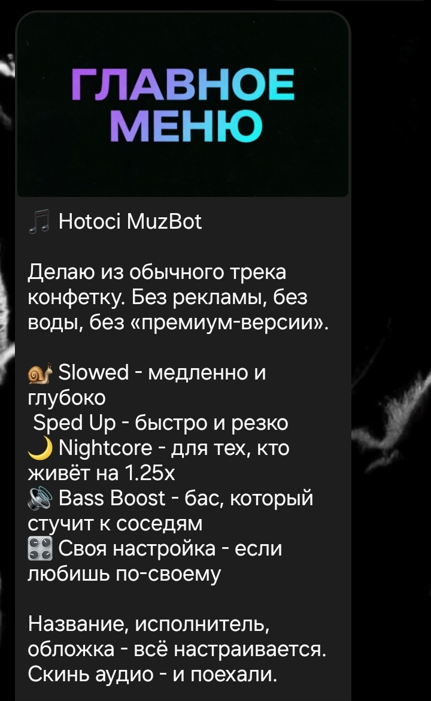
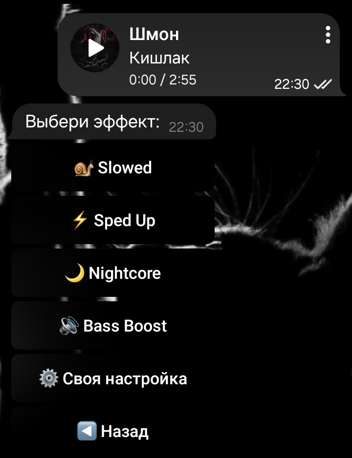
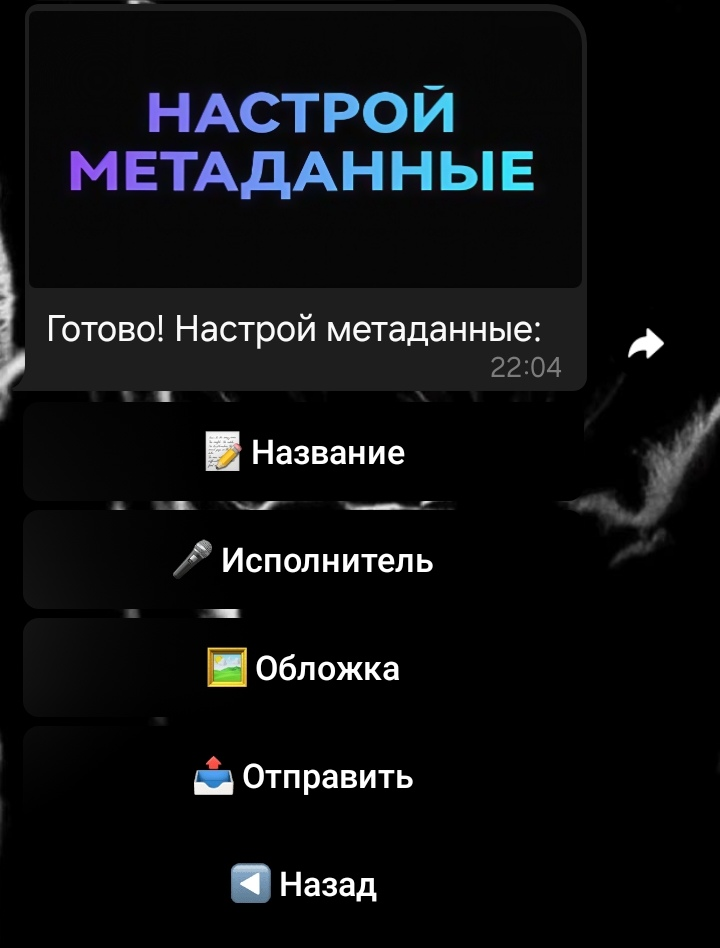

Минималистичный, быстрый и мощный инструмент для создания Slowed, Sped Up, Nightcore и Bass Boost треков прямо в Telegram.
Запустить ботаНажми на карточку, чтобы узнать детали
Замедляет трек и добавляет эхо. Получается тягучий, атмосферный звук — как в грустных эдитах.
Популярный выборУскоряет трек. Звучит бодро и энергично — тот самый формат, который залетает в TikTok.
Высокая энергияУскоряет и повышает голос. Получается писклявый анимешный стиль — ярко и звонко.
СтилизацияКачает басы. Для тех, кто любит, чтобы колонки дрожали. Без хрипа и грязи.
Для колонокЧетыре простых шага до готового трека
Загрузи аудиофайл или отправь ссылку на трек прямо в чат с ботом.
Используй интуитивные инлайн-кнопки для выбора нужного режима.
Укажи название, исполнителя и загрузи кастомную обложку для релиза.
Получи обработанный файл, готовый к публикации.
Полный контроль над параметрами звука
Чистый, удобный и интуитивно понятный

Команда /start и выбор базовых действий

Инлайн-кнопки для мгновенного применения пресетов

Ввод названия, артиста и загрузка обложки